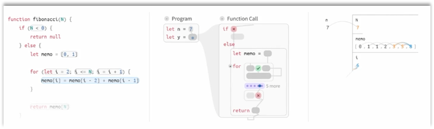
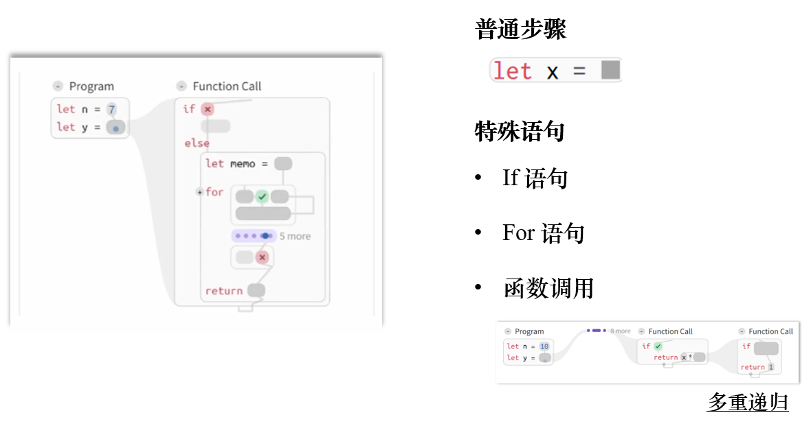

论文：CrossCode: Multi-level Visualization of Program Execution
作者：Devamardeep Hayatpur, Daniel Wigdor, Haijun Xia
发表：CHI 2023
程序可视化可形成用于描述程序执行的心理模型，有助于理解和调试代码。但是这些可视化具有固定的抽象层次，例如逐行显示。相较于此，程序员在检查程序行为时会在不同抽象层次之间切换。本文基于对现有手工设计的程序可视化的调研结果，设计了一个程序可视化系统 CrossCode。该系统利用程序语法、控制流和数据流中的结构线索，整合与引导跨越多个抽象层次的程序执行过程。在专家参与的探索性实验中，本文发现 CrossCode 能使用户在程序执行过程中保持位置感，有助于解释程序行为，并追踪程序状态的变化和更新。
背景介绍
计算机程序的编写需要将人类意图转化为一系列计算机可执行的指令。编程过程中，不断确保预期程序行为、源代码和执行之间的一致性需要极多的认知努力，成为初学者的学习障碍和专家的生产力障碍。
大量研究试图通过使用程序可视化来减少理解计算机程序的认知负担。现有的可视化程序可视化系统，如 Python Tutor 和 Projection Boxes 能够展示程序运行中每个具体步骤的状态，但缺乏对程序整体行为的呈现。
某些针对特定算法的可视化，可以传达整个算法的关键步骤和行为，但这类可视化并不通用，需要对每个算法做特定的设计。
因此，现有系统仅能提供适用于通用程序的低层次（low-level）的状态可视化，或需要针对特定程序专门设计的高层次（high-level）的行为可视化。而实际情况中，程序员和教育工作者需要灵活地使用不同层次的抽象来推理和传达程序。例如，通过打断点观察关键的程序状态，定位有问题的环节；同时，也使用手绘的流程图模拟并推理程序行为。本文的目标是填补现有的程序可视化工具之间的空隙，设计一个能够在不同的抽象层级之间切换的程序可视化系统。
本文调研了 92 个来自知名教学媒体的程序可视化图表和动画，寻求统一的程序传达策略，总结出 3 个设计模式：聚合、简化和概览。
基于调研结果，本文开发了 CrossCode，利用语法结构、控制流和数据流信息，提供灵活的程序表达，引导用户对程序进行多层次的探索。
本文贡献：
- 现有程序行为可视化的设计模式总结
- 可灵活生成程序可视化并支持多层次探索的原型系统
- 系统的定量实验评估
形成性研究
本文从现有的程序可视化设计中总结出 3 个设计模式：
D1 聚合：将分散的操作整合为一系列关键步骤。
D2 简化：对重复的操作做缩写。
D3 概览：从整体的层面表达程序的执行过程。
调研的结论重点反映了程序执行过程中高层次的可视化需求。
系统设计

系统界面由源代码、控制流视图和数据视图组成（从左至右）。
控制流视图设计
控制流视图用来展示程序结构，引导用户探索，利用动画和可视设计呈现程序过程中的各种行为。

数据视图设计
数据视图利用颜色编码和过渡动画来展示程序状态及数据变化。
讨论
本文进行了一个专家实验，基于实验结果，可以得到一些启示：
- CrossCode 鼓励自顶向下的程序理解策略
- CrossCode 的理想化表达可以补充编程者的心理模型（上下文感知）
- CrossCode 的导航模型可以扩展到复杂的程序
总结
本文的价值
- 对于当前程序可视化设计模式的总结
- CrossCode 提供灵活的程序可视化，引导用户做多层次的探索和推理
- 在程序运行过程中为用户提供位置感非常重要
未来方向
- 语法之外的聚合
- 连接控制流和数据视图
- 支持并行和多线程的控制流
✉️ zjuvis@cad.zju.edu.cn